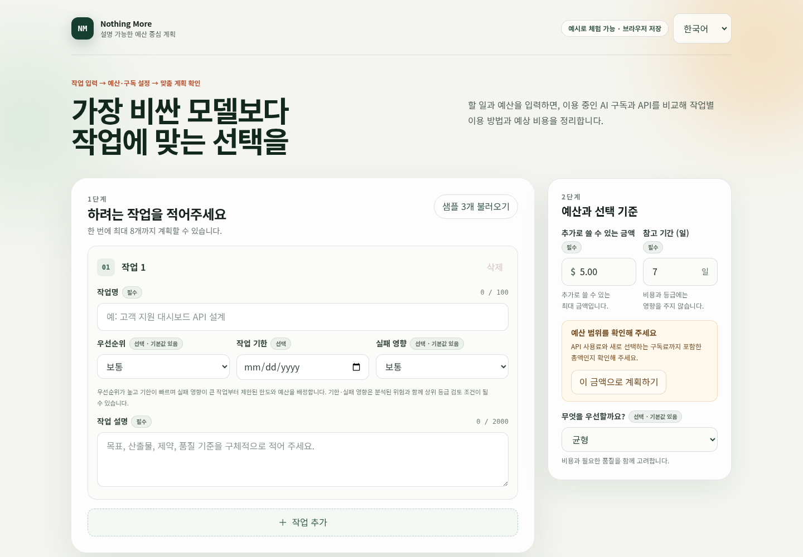
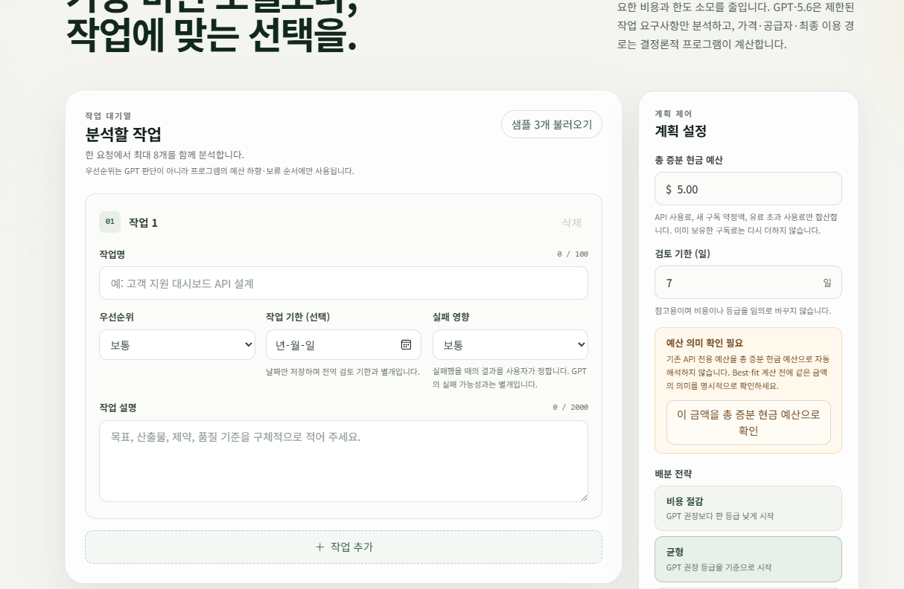
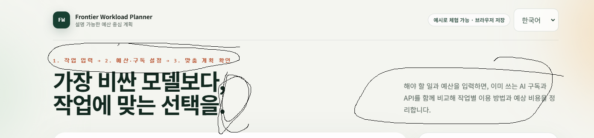
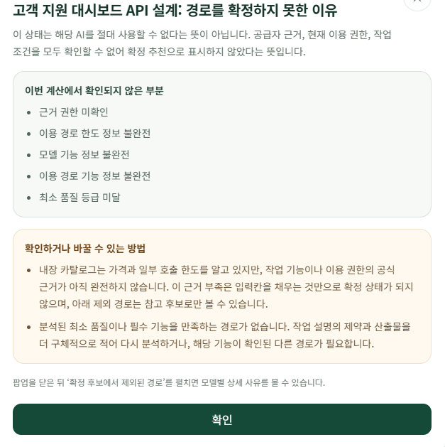
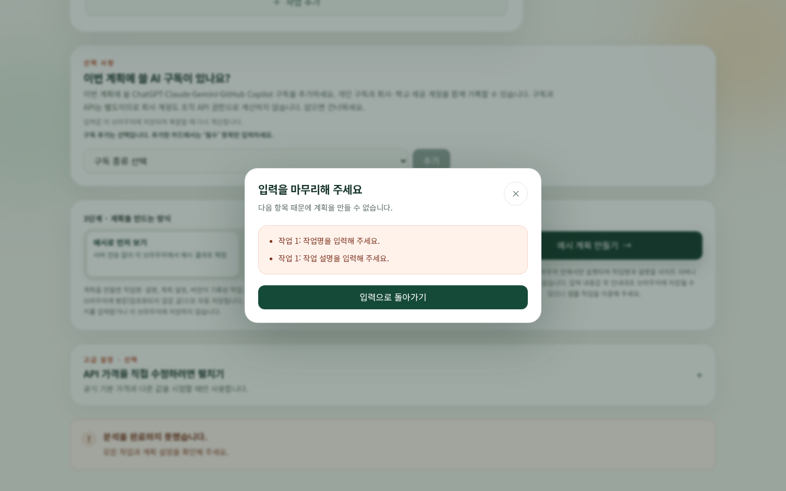
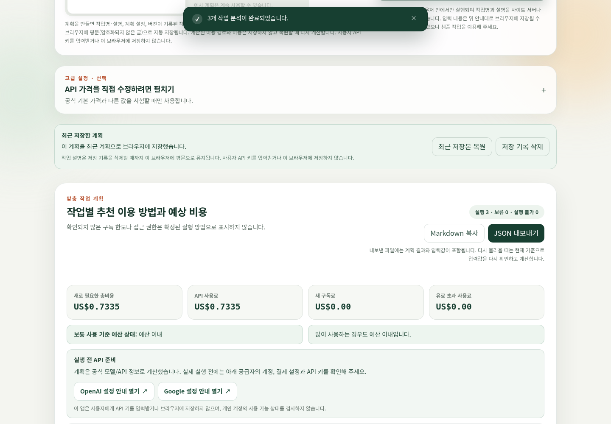
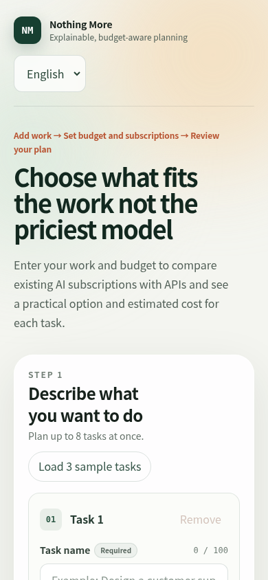

Human direction · AI implementation
How three days of hands-on feedback reshaped a strict AI cost planner to be clearer and easier for an individual to use.

Official story: maker's human-written Korean retrospective · This deck: AI-authored, human-reviewed
Why this exists
“돈은 쓰고, 기능은 제대로 사용해 보지도 못한 채 돈을 날리는 사람이 나 말고도 많을 것 같아서 만들어 본 프로젝트입니다.”
“I thought I couldn't be the only person paying for features I never even got to use.”
No extra subscription or API expense without a reason. Use only what helps the work.
The first version

“처음 만들어진 버전은 사실 실사용이 어렵다고 생각했죠.”
“I honestly thought the first version was hard to use in practice.”
The maker did not review a mockup from a distance. The maker used the app as the target user, captured the exact screens that felt wrong, and kept asking for another pass.
Prompt → code → outcome

Internal vocabulary and a visually uneven first screen made the product feel more specialized than it needed to be.
Best-fit / Mock / Live / override became user-facing steps, sample-first language, optional advanced controls, and a clearer action order.
A dead end became a next step


PARAPHRASED MAKER FEEDBACK“이거 때문에 안 됩니다”에서 끝내지 말고, 고칠 부분으로 이동시켜 주세요. → The primary action now scrolls and focuses the first invalid field.
Privacy as a product boundary
Task planning runs in the browser from a checked-in fixture.
One successful source scenario is automatically saved as browser plaintext when storage is available.
If deliberately enabled, the backend forwards only task ID, name, and description to OpenAI.
store:false is used, but it is not described as zero retention.
“사용자의 경험이 우선이잖아요? 저는 개인정보 안내도 사용자가 실제로 이해할 수 있어야 의미가 있다고 생각했어요.”
Release policy requires public Live to remain disabled; the final deployment must verify it on the exact release commit.
Designed for the screen people actually have

The app distinguishes “recalculated, unchanged” from no response.
Five-hour and weekly observations stay together instead of becoming fake extra capacity.

What collaboration actually meant
“마치 감정 없는 천재와 감정 있는 일반인이 같이 일하는 것처럼 말이죠.”“It felt like an emotionless genius and an ordinary person with feelings working together.”
“평소 ADHD가 있는 저에게 어떤 일에 대한 동기는 굉장히 중요했으니까요.” The hackathon gave the maker that motivation for three full days.
Official source: maker's human-written Korean retrospective · English translation and slide copy: AI-authored, human-reviewed